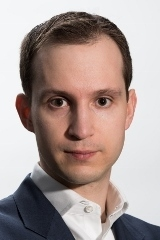
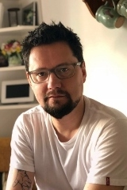
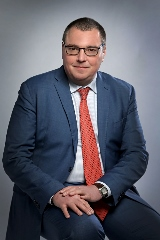
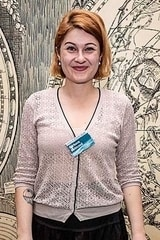
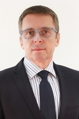
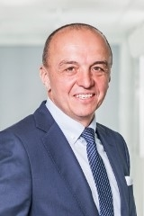
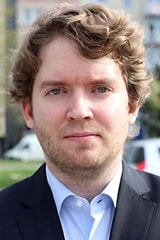
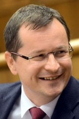

The Second Annual Central European Conference organized by University of London Union Czech & Slovak Society aims to bring together Czech and Slovak students and professionals in London as well as any students interested in the region and provide a platform for discussion about key topics, challenges and opportunities that will transform the region in near future. Participants will have an opportunity to hear from and network with academics, public figures from the region and professionals from many fields with the view of uncovering how these challenges can be tackled and opportunities seized.
The Conference will feature four panel discussions on topics ranging from economics, business, international relations or politics as well as keynote and closing speeches. Come and join us for a day full of inspiring people, stimulating discussions and use the unique opportunity to meet like-minded students or professionals interested in the region and future of our countries!
8.00 - 9.00
Registration
9.00 - 9.15
Opening Address
9.15 - 9.35
Keynote Address (Martin M Šimečka)
9.35 - 10.50
The Eurozone and Central Europe: Assessing the Financial Future of the Region
10.50 - 11.15
Coffee Break
11.15 - 12.30
The Forgotten Minority: Agency and Best Practice in Roma Inclusion
12.30 - 12.40
Introduction of Hack to London powered by Vacuum Labs
12.40 - 13.00
Diaspora: Questions and Answers (A talk by LEAF)
13.00 - 14.30
Lunch (with Workshops between 13.30 - 14.30)
14.30 - 15.45
Social Bubbles and Divided Society: the Impact of Fake News
15.34 - 16.10
Coffee Break
16.10 - 17.25
Factory of Europe: What Is The Future of Automobile Industry and What Is the Role of Innovation?
17.25 - 17.45
Keynote Address (Pavel Fischer)
17.45 - 18.15
Closing Address
19.00
Evening Reception powered by Vacuum Labs
To find out more about each speaker click their picture.
Eurozone panel
Social Bubbles panel
Eurozone panel
Roma Inclusion panel
Eurozone panel
Factory of Europe panel
Social Bubbles panel
Roma Inclusion panel
Factory of Europe panel
Roma Inclusion panel
Factory of Europe panel
Social Bubbles panel
We have a range of tickets for both students and professionals, as well as options to financially support the conference, or our initiative Hack to London. To see the options, click the button below and you will be taken to our Ticketbase page.
Get Tickets